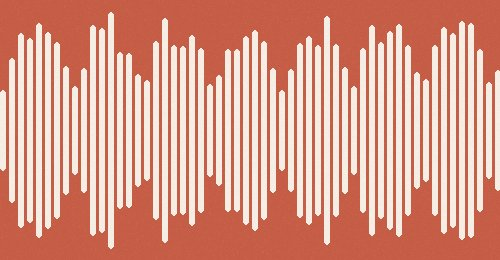
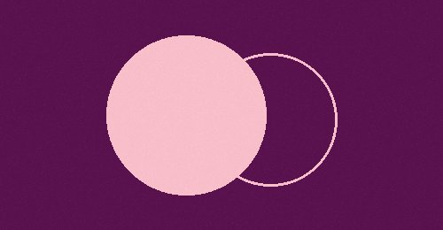
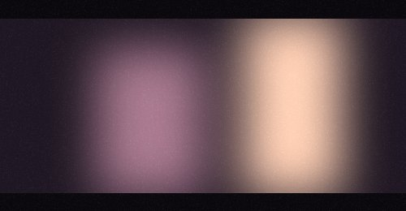
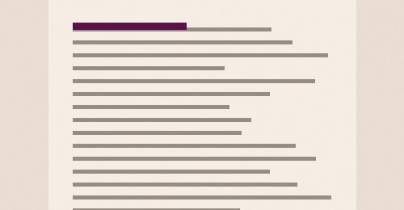

Déborah
Se déconnecter

Prochaine séance
lundi 16 novembre · 15h
entre la séance 9 et la séance 10
Comment tu te sens, là ?
Une musique pour ce moment
{{musicTitle}} {{musicArtist}}
{{musicDuration}}
Posée · 4 nov. Bousculée · 2 nov. Vive · 29 oct.
Pour la séance 10
envoyée le 26 octobre
Déborah, trois choses pour les deux semaines qui viennent. Elles se tiennent ensemble : on fabrique l'évidence, on protège le moment d'avant, et on arrête de passer par l'écrit…
Les deux colonnestu as écrit
Le quart d'heure d'avant
Trois vocaux
ton carnet
7 novembre● pour la séance
RDV Google où l'image que j'avais de Marie, que j'admirais chez Canal, a changé. Je me suis sentie d'égale à égale. C'est ce qui a rendu la discussion intéressante, j'ai injecté de la spontanéité.
4 novembresous « Les deux colonnes »
Colonne 1, j'ai mis cinq noms en trois minutes. Colonne 2, rien encore. Je sais exactement pourquoi.
pour toi
Toutes les ressources →

Podcast
Que cache notre besoin de reconnaissance ?
Charles Pépin
Parce que la reconnaissance, chez toi, passe toujours par la preuve. Écoute ce qu'il dit de la gratitude.
à découvrircommencéterminé

Podcast · 1/2
Faut-il pardonner à nos mères ?
Épisode 1 sur 2
Pas pour pardonner. Pour entendre ce que tu as appris d'elle sur ce qu'une femme doit tenir.
à découvrircommencéterminé

Podcast
De l'intime à l'universel avec Alice Diop
France Inter
Elle filme ce qu'on lui a dit de ne pas montrer. Toi, tu produis ce qu'on t'a dit de produire.
à découvrircommencéterminé

Lecture
Un entretien avec Paul Ricœur
PDF, 12 pages
Tu n'es pas trois personnes, tu es une histoire qui se raconte. Lis les pages 4 à 7.
à découvrircommencéterminé
mémoire
Séance 9Ma boussole · Le lexique · Attali
Lire la séance →Séance 7Partir avant la fin · La maman · Le vide
Lire la séance →Séance 6Dire non · La productrice · Respirer
Lire la séance →Séance 5Le corps d'abord · Nager · Dommage
Lire la séance →